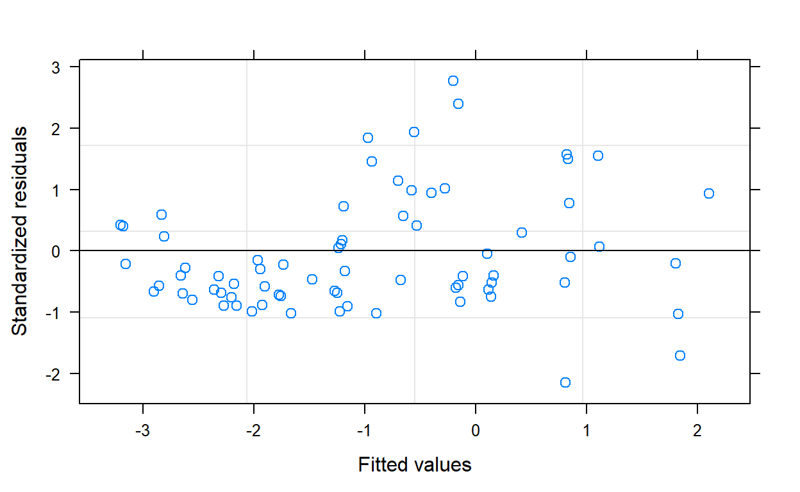
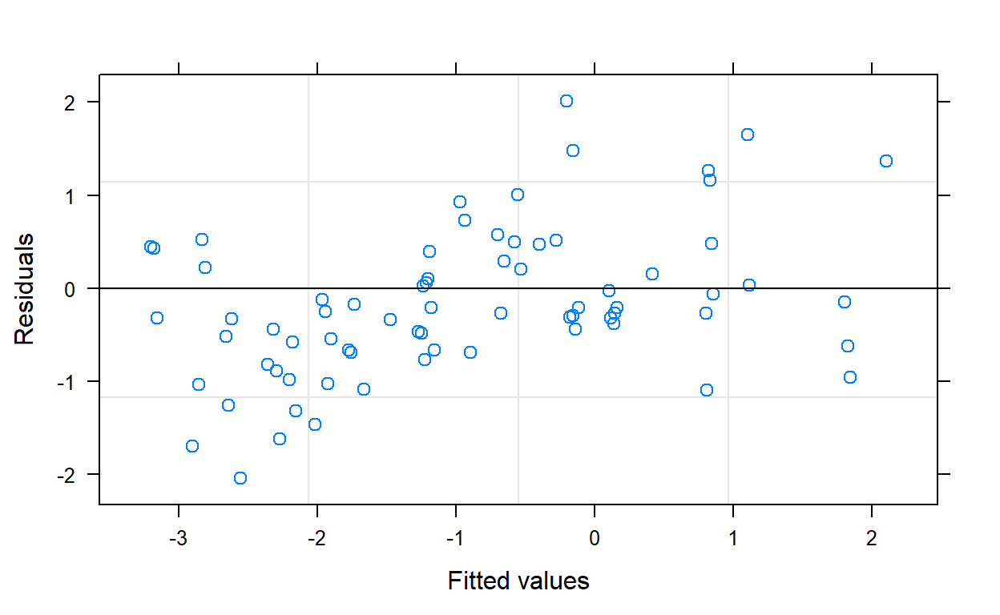
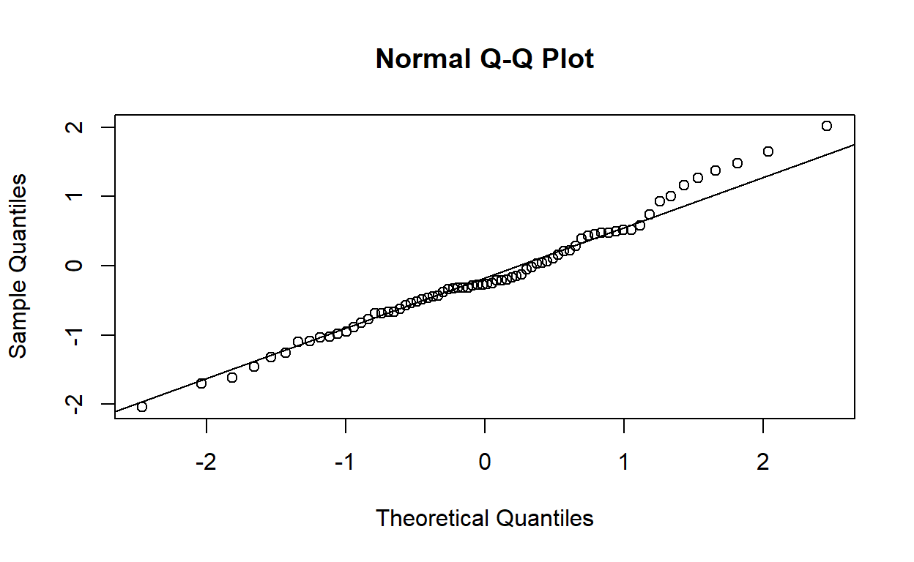
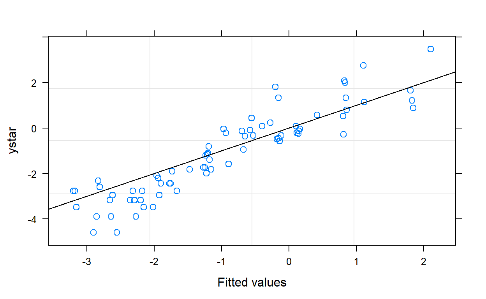
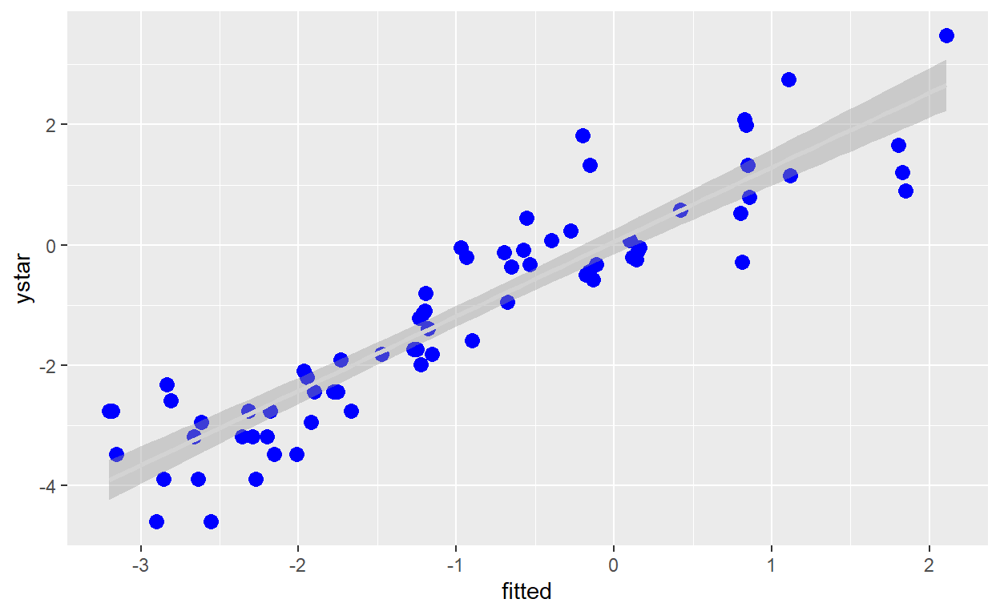

Here is the R code to download the required packages for this exercise.
# install package manager 'packman'
if (!require(pacman)){
install.packages('pacman', repos = "https://rweb.crmda.ku.edu/cran/")
}## Loading required package: pacman# load packages needed for this exercise
library(pacman)
p_load(tidyverse, nlme, emmeans)Our data is located in data.csv file. Import data and create new variables using the code below.
# import data
#library(tidyverse)
a <- read_csv("data.csv")## Parsed with column specification:
## cols(
## plot = col_double(),
## t = col_double(),
## blk = col_double(),
## trt = col_double(),
## pctsev = col_double()
## )# create new variables
a$y <- a$pctsev/100
a$ystar <- log(a$y/(1-a$y))
a$wt <- a$y*(1-a$y)
# specify that blk and trt are factors
a$blk <- as.ordered(as.factor(a$blk))
a$trt <- as.ordered(as.factor(a$trt))
# get a glimpse of data
aglimpse(a)## Observations: 72
## Variables: 8
## $ plot <dbl> 101, 102, 103, 201, 202, 203, 301, 302, 303, 401, 402, ...
## $ t <dbl> 0, 0, 0, 0, 0, 0, 0, 0, 0, 0, 0, 0, 7, 7, 7, 7, 7, 7, 7...
## $ blk <ord> 1, 1, 1, 2, 2, 2, 3, 3, 3, 4, 4, 4, 1, 1, 1, 2, 2, 2, 3...
## $ trt <ord> 2, 1, 3, 2, 3, 1, 3, 2, 1, 1, 2, 3, 2, 1, 3, 2, 3, 1, 3...
## $ pctsev <dbl> 9, 6, 2, 7, 5, 3, 4, 2, 6, 1, 1, 4, 4, 6, 10, 2, 5, 3, ...
## $ y <dbl> 0.09, 0.06, 0.02, 0.07, 0.05, 0.03, 0.04, 0.02, 0.06, 0...
## $ ystar <dbl> -2.313635, -2.751535, -3.891820, -2.586689, -2.944439, ...
## $ wt <dbl> 0.0819, 0.0564, 0.0196, 0.0651, 0.0475, 0.0291, 0.0384,...Run the mixed model analysis using nlme package in R. The function used to fit the mixed model is called lme.
# fit the model
#library(nlme)
mm_1 <- lme(ystar ~ trt*t, # fixed effects
data = a,
random = list(blk = ~ 1, plot = ~ 1), # random effects
correlation = corAR1(form = (plot = ~ 1)), # specify that observations within a plot are autocorrelated. Other valid arguments are corAR1, corARMA, corCAR1, corCompSymm, corExp, corGaus, corLin, corRatio, corSpher, corSymm
contrasts = list(trt = "contr.SAS"), # specify this option to get parameter estimates similar to reported by SAS
weights = ~ I(1/wt))
# output the summary
summary(mm_1)## Linear mixed-effects model fit by REML
## Data: a
## AIC BIC logLik
## 210.5257 232.4222 -95.26285
##
## Random effects:
## Formula: ~1 | blk
## (Intercept)
## StdDev: 0.1887117
##
## Formula: ~1 | plot %in% blk
## (Intercept) Residual
## StdDev: 4.604217e-05 0.2519511
##
## Correlation Structure: AR(1)
## Formula: ~1 | blk/plot
## Parameter estimate(s):
## Phi
## 0.06205463
## Variance function:
## Structure: fixed weights
## Formula: ~I(1/wt)
## Fixed effects: ystar ~ trt * t
## Value Std.Error DF t-value p-value
## (Intercept) -2.5689859 0.3629604 57 -7.077868 0.0000
## trt1 -0.5406041 0.5136249 6 -1.052527 0.3331
## trt2 -0.1948084 0.5193013 6 -0.375136 0.7205
## t 0.0992675 0.0142177 57 6.981964 0.0000
## trt1:t 0.0437431 0.0212717 57 2.056398 0.0443
## trt2:t -0.0221696 0.0202998 57 -1.092109 0.2794
## Correlation:
## (Intr) trt1 trt2 t trt1:t
## trt1 -0.658
## trt2 -0.652 0.459
## t -0.888 0.627 0.621
## trt1:t 0.592 -0.913 -0.413 -0.667
## trt2:t 0.623 -0.439 -0.924 -0.700 0.466
##
## Standardized Within-Group Residuals:
## Min Q1 Med Q3 Max
## -2.1518915 -0.6900213 -0.4024653 0.4132408 2.7733450
##
## Number of Observations: 72
## Number of Groups:
## blk plot %in% blk
## 4 12# extract covariance parameter estimates
VarCorr(mm_1)## Variance StdDev
## blk = pdLogChol(1)
## (Intercept) 3.561212e-02 1.887117e-01
## plot = pdLogChol(1)
## (Intercept) 2.119882e-09 4.604217e-05
## Residual 6.347936e-02 2.519511e-01# extract type3 fixed effects anova
anova.lme(mm_1, type = 'marginal')# pearson residuals vs. fitted values
plot(mm_1, resid(., type="pearson") ~ fitted(.), abline = 0)
# standardaized residuals vs. fitted values
plot(mm_1, resid(., scaled=TRUE) ~ fitted(.), abline = 0)
# qq plot
qqnorm(residuals(mm_1))
qqline(residuals(mm_1))
#observed vs. fitted values
plot(mm_1, ystar ~ fitted(.), abline = c(0,1))
Run the mixed model analysis using nlme package in R. The function used to fit the mixed model is called lme. Here we will specify no intercept. We will also use emmeans package to get least squared means and contrasts.
# fit the model
#library(nlme)
mm_2 <- update(mm_1, fixed = ystar ~ - 1 + trt + trt:t) # update fixed effects in mm_1, -1 indicates no intercept
# output the summary
summary(mm_2)## Linear mixed-effects model fit by REML
## Data: a
## AIC BIC logLik
## 210.5257 232.4222 -95.26285
##
## Random effects:
## Formula: ~1 | blk
## (Intercept)
## StdDev: 0.1887117
##
## Formula: ~1 | plot %in% blk
## (Intercept) Residual
## StdDev: 4.603096e-05 0.2519511
##
## Correlation Structure: AR(1)
## Formula: ~1 | blk/plot
## Parameter estimate(s):
## Phi
## 0.06205463
## Variance function:
## Structure: fixed weights
## Formula: ~I(1/wt)
## Fixed effects: ystar ~ trt + trt:t - 1
## Value Std.Error DF t-value p-value
## trt1 -3.1095900 0.3877657 6 -8.019250 2e-04
## trt2 -2.7637943 0.3944803 6 -7.006165 4e-04
## trt3 -2.5689859 0.3629604 6 -7.077868 4e-04
## trt1:t 0.1430106 0.0158560 58 9.019328 0e+00
## trt2:t 0.0770979 0.0144893 58 5.321034 0e+00
## trt3:t 0.0992675 0.0142177 58 6.981964 0e+00
## Correlation:
## trt1 trt2 trt3 trt1:t trt2:t
## trt2 0.057
## trt3 0.065 0.062
## trt1:t -0.881 0.001 -0.002
## trt2:t 0.001 -0.901 0.001 -0.001
## trt3:t -0.002 0.000 -0.888 0.002 0.000
##
## Standardized Within-Group Residuals:
## Min Q1 Med Q3 Max
## -2.1518915 -0.6900213 -0.4024653 0.4132408 2.7733450
##
## Number of Observations: 72
## Number of Groups:
## blk plot %in% blk
## 4 12# extract covariance parameter estimates
VarCorr(mm_2)## Variance StdDev
## blk = pdLogChol(1)
## (Intercept) 3.561212e-02 1.887117e-01
## plot = pdLogChol(1)
## (Intercept) 2.118849e-09 4.603096e-05
## Residual 6.347936e-02 2.519511e-01# extract type3 fixed effects anova
anova.lme(mm_2, type = 'marginal')# compare the slopes for different treatments
#library(emmeans)
emtrends(mm_2, pairwise ~ trt, var="t", adjust = "none")## $emtrends
## trt t.trend SE df lower.CL upper.CL
## 1 0.1430 0.0159 58 0.1113 0.175
## 2 0.0771 0.0145 58 0.0481 0.106
## 3 0.0993 0.0142 58 0.0708 0.128
##
## d.f. method: containment
## Confidence level used: 0.95
##
## $contrasts
## contrast estimate SE df t.ratio p.value
## 1 - 2 0.0659 0.0215 58 3.067 0.0033
## 1 - 3 0.0437 0.0213 58 2.056 0.0443
## 2 - 3 -0.0222 0.0203 58 -1.092 0.2793# get the treatment difference at various time points
emmeans(mm_2, pairwise ~ trt|t, nesting = NULL, at = list(t = c(0, 7, 14, 21, 28, 35)), adjust = "none")## $emmeans
## t = 0:
## trt emmean SE df lower.CL upper.CL
## 1 -3.1096 0.388 6 -4.058 -2.1608
## 2 -2.7638 0.394 6 -3.729 -1.7985
## 3 -2.5690 0.363 6 -3.457 -1.6809
##
## t = 7:
## trt emmean SE df lower.CL upper.CL
## 1 -2.1085 0.295 6 -2.830 -1.3873
## 2 -2.2241 0.306 6 -2.974 -1.4746
## 3 -1.8741 0.278 6 -2.555 -1.1931
##
## t = 14:
## trt emmean SE df lower.CL upper.CL
## 1 -1.1074 0.219 6 -1.644 -0.5712
## 2 -1.6844 0.229 6 -2.246 -1.1232
## 3 -1.1792 0.207 6 -1.687 -0.6719
##
## t = 21:
## trt emmean SE df lower.CL upper.CL
## 1 -0.1064 0.184 6 -0.556 0.3437
## 2 -1.1447 0.179 6 -1.582 -0.7072
## 3 -0.4844 0.168 6 -0.896 -0.0726
##
## t = 28:
## trt emmean SE df lower.CL upper.CL
## 1 0.8947 0.210 6 0.380 1.4095
## 2 -0.6051 0.179 6 -1.042 -0.1680
## 3 0.2105 0.183 6 -0.237 0.6581
##
## t = 35:
## trt emmean SE df lower.CL upper.CL
## 1 1.8958 0.282 6 1.207 2.5850
## 2 -0.0654 0.229 6 -0.626 0.4948
## 3 0.9054 0.242 6 0.314 1.4968
##
## d.f. method: containment
## Confidence level used: 0.95
##
## $contrasts
## t = 0:
## contrast estimate SE df t.ratio p.value
## 1 - 2 -0.3458 0.537 6 -0.644 0.5435
## 1 - 3 -0.5406 0.514 6 -1.053 0.3331
## 2 - 3 -0.1948 0.519 6 -0.375 0.7205
##
## t = 7:
## contrast estimate SE df t.ratio p.value
## 1 - 2 0.1156 0.404 6 0.286 0.7843
## 1 - 3 -0.2344 0.383 6 -0.613 0.5625
## 2 - 3 -0.3500 0.392 6 -0.893 0.4062
##
## t = 14:
## contrast estimate SE df t.ratio p.value
## 1 - 2 0.5770 0.288 6 2.004 0.0919
## 1 - 3 0.0718 0.271 6 0.265 0.7996
## 2 - 3 -0.5052 0.279 6 -1.811 0.1201
##
## t = 21:
## contrast estimate SE df t.ratio p.value
## 1 - 2 1.0384 0.219 6 4.739 0.0032
## 1 - 3 0.3780 0.211 6 1.794 0.1229
## 2 - 3 -0.6604 0.206 6 -3.204 0.0185
##
## t = 28:
## contrast estimate SE df t.ratio p.value
## 1 - 2 1.4998 0.242 6 6.204 0.0008
## 1 - 3 0.6842 0.245 6 2.795 0.0314
## 2 - 3 -0.8156 0.218 6 -3.741 0.0096
##
## t = 35:
## contrast estimate SE df t.ratio p.value
## 1 - 2 1.9611 0.338 6 5.806 0.0011
## 1 - 3 0.9904 0.346 6 2.861 0.0288
## 2 - 3 -0.9707 0.305 6 -3.184 0.0190# add fitted and residuals in to a new dataset called b
b = cbind(a, resid = resid(mm_2), fitted = fitted(mm_2))
# fit linear regression
b.lm <- lm(ystar ~ fitted, data=b)
# plot using ggplot2 package
ggplot(b, aes(x=fitted, y = ystar)) +
geom_point(color="blue", size = 3) +
geom_smooth(method = lm, color = "lightgrey")